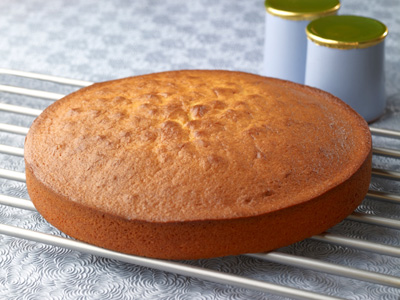

<ion-view view-title="Gateau au yaourt">

    <ion-content class="padding">


        <h1>Gateau au yaourt</h1>

        

        <p class="gras">Temps de préparation : 15 minutes</p>

        <p class="gras">Temps de cuisson : 20 minutes</p>

        <p class="gras"> Ingrédients / pour 6 personnes :</p>
        <ul>
            <li>- 1/2 paquet de levure chimique</li>
            <li>  - 1 pot de yaourt nature (= 20 cl)</li>
            <li> - 1/2 pot d'huile de colza (= 10 cl)</li>
            <li>  - 2 pots de sucre semoule</li>
            <li>  - 3 pots de farine</li>
            <li>  - 2 œufs</li>
            <li>  - 1 zeste de citron jaune</li>
        </ul><br>

        <p class="gras">Préparation de la recette :</p>

        <p>Passer le beurre au micro-ondes une dizaine de secondes.</p>
        <p>Faire fondre le chocolat au bain-marie en morceaux.</p>
        <p>Dans un saladier travailler le beurre mou, ajouter le sucre en poudre et melanger. Puis ajouter les oeufs un à un en alternance avec la farine.</p>
        <p>Incorporer le chocolat fondu, remuer et verser la préparation dans des ramequins beurrés.</p>
        <p>Mettre les ramequins dans le congélateur pendant une heure.</p>
        <p>Préchauffer le four à 150°C et mettre les ramequins à cuire 20 minutes pas plus.</p>


    </ion-content>

</ion-view>